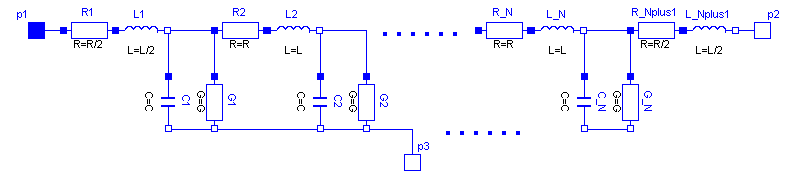
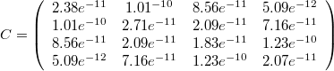
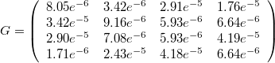
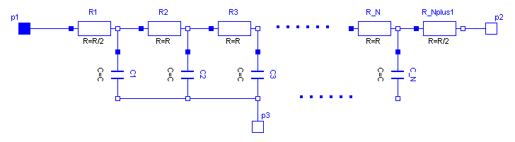

Lossy and lossless segmented transmission lines, and LC distributed line models
This package contains lossy and lossless segmented transmission lines, and LC distributed line models. The line models do not yet possess a conditional heating port.
Extends from Modelica.Icons.Package (Icon for standard packages).
| Name | Description |
|---|---|
| Lossy Transmission Line | |
| M_OLine | Multiple OLine |
| ULine | Lossy RC Line |
| TLine1 | Lossless transmission line with characteristic impedance Z0 and transmission delay TD |
| TLine2 | Lossless transmission line with characteristic impedance Z0, frequency F and normalized length NL |
| TLine3 | Lossless transmission line with characteristic impedance Z0 and frequency F |
 Modelica.Electrical.Analog.Lines.OLine
Modelica.Electrical.Analog.Lines.OLineLossy Transmission Line
Like in the picture below, the lossy transmission line OLine is a single-conductor lossy transmission line which consists of segments of lumped resistors and inductors in series and conductor and capacitors that are connected with the reference pin p3. The precision of the model depends on the number N of lumped segments.
To get a symmetric line model, the first resistor and inductor are cut into two parts (R1 and R_Nplus1, L1 and L_Nplus1). These two new resistors and inductors have the half of the resistance respectively inductance the original resistor respectively inductor.

The capacitances are calculated with: C=c*length/N.
The conductances are calculated with: G=g*length/N.
The resistances are calculated with : R=r*length/(N+1).
The inductances are calculated with : L=l*length/(N+1).
For all capacitors, conductors, resistors and inductors the values of each segment are the same except of the first and last resistor and inductor, that only have the half of the above calculated value of the rest.
The user has the possibility to enable a conditional heatport. If so, the OLine can be connected to a thermal network. When the parameter alpha is set to an value greater then zero, the OLine becomes temperature sensitive
due to their resistors which resistances are calculated by R = R_ref*(1 + alpha*(heatPort.T - T_ref)) and conductors calculated by (G_actual = G_ref/(1 + alpha*(T_heatPort - T_ref)).
Note, this is different to the lumped line model of SPICE.
| Name | Description |
|---|---|
| r | Resistance per meter [Ohm/m] |
| l | Inductance per meter [H/m] |
| g | Conductance per meter [S/m] |
| c | Capacitance per meter [F/m] |
| length | Length of line [m] |
| N | Number of lumped segments |
| alpha_R | Temperature coefficient of resistance (R_actual = R*(1 + alpha*(T_heatPort - T_ref)) [1/K] |
| alpha_G | Temperature coefficient of conductance (G_actual = G_ref/(1 + alpha*(T_heatPort - T_ref)) [1/K] |
| useHeatPort | =true, if HeatPort is enabled |
| T | Fixed device temperature if useHeatPort = false [K] |
| T_ref | [K] |
| Name | Description |
|---|---|
| p1 | |
| p2 | |
| p3 | |
| heatPort |
Multiple OLine
The M_OLine is a multi line model which consists of several segments and several single lines. Each segment consists of resistors and inductors that are connected in series in each single line, and of capacitors and conductors both between the lines and to the ground. The inductors are coupled to each other like in the M_Inductor model. The following picture shows the schematic of a segment with four single lines (lines=4):
The complete multi line consists of N segments and an auxiliary segment_last:
-- segment_1 -- segment_2 -- ... -- segment_N -- segment_last --
In the picture of the segment can be seen, that a single segment is asymmetric. Connecting such asymmetric segments in a series forces also an asymmetric multi line. To get a symmetric model which is useful for coupling and which guaranties the same pin properties, in the segment_1 only half valued resistors and inductors are used. The remaining resistors and inductors are at the other end of the line within the auxiliary segment_last. For the example with 4 lines the schematic of segment_last is like this:
The number of the capacitors and conductors depends on the number of single lines that are used, because each line is connected to every other line by both a capacitor and a conductor. One line consists of at least two segments. Inside the model M_OLine the model segment is used. This model represents one segment which is build as described above. For modelling the inductances and their mutual couplings the model M_Transformer is used. To fill the resistance vector, resistance values as many as lines are needed, e.g., if there are four lines, four resistances are needed. For example for a microelectronic line of 0.1m length, a sensible resistance-vector would be R=[4.76e5, 1.72e5, 1.72e5, 1.72e5].
Filling the matrices of the inductances, capacitances and conductances is a bit more complicated, because those components occur also between two lines and not only (like the resistor) in one line. The entries of the matrices are given by the user in form of a vector. The vector length dim_vector_lgc is calculated by dim_vector_lgc = lines*(lines+1)/2. Inside the model a symmetric inductance matrix, a symmetric capacitance matrix and a symmetric conductance matrix are built out of the entries of the vectors given by the user. The way of building is the same for each matrix, so the approach for filling one of the matrices will be shown at an example:
The number of lines is assumed to be four. To build the matrix, the model needs the values from the main diagonal and from the positions that are below the main diagonal. To get the following matrix
the vector with dim_vector_lgc=4*5/2=10 has to appear in the following way: vector = [1, 0.1, 0.2, 0.4, 2, 0.3 0.5, 3, 0.6, 4]
For the example of a microelectronic line of 0.1m length, which is used as default example for the M_OLine model, a sensible inductance-matrix would be
For the example of a microelectronic line of 0.1m length, which is used as default example for the M_OLine model, a sensible capacitance-matrix would be:

For the example of a microelectronic line of 0.1m length, which is used as default example for the M_OLine model, a sensible conductance-matrix would be:

The user has the possibility to enable a conditional heatport. If so, the M_OLine can be connected to a thermal network. When the parameter alpha is set to an value greater then zero, the M_OLine becomes temperature sensitive due to their resistors which resistances are calculated by R = R_ref*(1 + alpha*(heatPort.T - T_ref)) and conductors calculated by (G_actual = G_ref/(1 + alpha*(T_heatPort - T_ref)).
| Name | Description |
|---|---|
| length | Length of line [m] |
| N | Number of lumped segments |
| lines | Number of lines |
| r[lines] | Resistance per meter [Ohm/m] |
| l[dim_vector_lgc] | Inductance per meter [H/m] |
| g[dim_vector_lgc] | Conductance per meter [S/m] |
| c[dim_vector_lgc] | Capacitance per meter [F/m] |
| alpha_R | Temperature coefficient of resistance (R_actual = R*(1 + alpha*(T_heatPort - T_ref)) [1/K] |
| alpha_G | Temperature coefficient of conductance (G_actual = G_ref/(1 + alpha*(T_heatPort - T_ref)) [1/K] |
| useHeatPort | =true, if HeatPort is enabled |
| T | Fixed device temperature if useHeatPort = false [K] |
| T_ref | [K] |
| Name | Description |
|---|---|
| heatPort | |
| p[lines] | Positive pin |
| n[lines] | Negative pin |
 Modelica.Electrical.Analog.Lines.ULine
Modelica.Electrical.Analog.Lines.ULineLossy RC Line
As can be seen in the picture below, the lossy RC line ULine is a single conductor lossy transmission line which consists of segments of lumped series resistors and capacitors that are connected with the reference pin p3. The precision of the model depends on the number N of lumped segments.
To get a symmetric line model, the first resistor is cut into two parts (R1 and R_Nplus1). These two new resistors have the half of the resistance of the original resistor.

The capacitances are calculated with: C=c*length/N.
The resistances are calculated with: R=r*length/(N+1).
For all capacitors and resistors the values of each segment are the same except for the first and last resistor, that only has the half of the above calculated value.
The user has the possibility to enable a conditional heatport. If so, the ULine can be connected to a thermal network. When the parameter alpha is set to an value greater then zero, the ULine becomes temperature sensitive
due to their resistors which resistances are calculated by R = R_ref*(1 + alpha*(heatPort.T - T_ref)).
Note, this is different compared with the lumped line model of SPICE.
References
| Name | Description |
|---|---|
| r | Resistance per meter [Ohm/m] |
| c | Capacitance per meter [F/m] |
| length | Length of line [m] |
| N | Number of lumped segments |
| alpha | Temperature coefficient of resistance (R_actual = R*(1 + alpha*(T_heatPort - T_ref)) [1/K] |
| useHeatPort | =true, if HeatPort is enabled |
| T | Fixed device temperature if useHeatPort = false [K] |
| T_ref | [K] |
| Name | Description |
|---|---|
| p1 | |
| p2 | |
| p3 | |
| heatPort |
 Modelica.Electrical.Analog.Lines.TLine1
Modelica.Electrical.Analog.Lines.TLine1Lossless transmission line with characteristic impedance Z0 and transmission delay TD
Lossless transmission line with characteristic impedance Z0 and transmission delay TD The lossless transmission line TLine1 is a two Port. Both port branches consist of a resistor with characteristic impedance Z0 and a controlled voltage source that takes into consideration the transmission delay TD. For further details see Branin';s article below. The model parameters can be derived from inductance and capacitance per length (L'; resp. C';), i. e. Z0 = sqrt(L';/C';) and TD = sqrt(L';*C';)*length_of_line. Resistance R'; and conductance C'; per meter are assumed to be zero.
References:
Extends from Modelica.Electrical.Analog.Interfaces.TwoPort (Component with two electrical ports, including current).
| Name | Description |
|---|---|
| Z0 | Characteristic impedance [Ohm] |
| TD | Transmission delay [s] |
| Name | Description |
|---|---|
| p1 | Positive pin of the left port (potential p1.v > n1.v for positive voltage drop v1) |
| n1 | Negative pin of the left port |
| p2 | Positive pin of the right port (potential p2.v > n2.v for positive voltage drop v2) |
| n2 | Negative pin of the right port |
Modelica.Electrical.Analog.Lines.TLine2Lossless transmission line with characteristic impedance Z0, frequency F and normalized length NL
Lossless transmission line with characteristic impedance Z0, frequency F and normalized length NL The lossless transmission line TLine2 is a two Port. Both port branches consist of a resistor with the value of the characteristic impedance Z0 and a controlled voltage source that takes into consideration the transmission delay. For further details see Branin';s article below. Resistance R'; and conductance C'; per meter are assumed to be zero. The characteristic impedance Z0 can be derived from inductance and capacitance per length (L'; resp. C';), i. e. Z0 = sqrt(L';/C';). The normalized length NL is equal to the length of the line divided by the wavelength corresponding to the frequency F, i. e. the transmission delay TD is the quotient of NL and F.
References:
Extends from Modelica.Electrical.Analog.Interfaces.TwoPort (Component with two electrical ports, including current).
| Name | Description |
|---|---|
| Z0 | Characteristic impedance [Ohm] |
| F | Frequency [Hz] |
| NL | Normalized length |
| Name | Description |
|---|---|
| p1 | Positive pin of the left port (potential p1.v > n1.v for positive voltage drop v1) |
| n1 | Negative pin of the left port |
| p2 | Positive pin of the right port (potential p2.v > n2.v for positive voltage drop v2) |
| n2 | Negative pin of the right port |
Modelica.Electrical.Analog.Lines.TLine3Lossless transmission line with characteristic impedance Z0 and frequency F
Lossless transmission line with characteristic impedance Z0 and frequency F The lossless transmission line TLine3 is a two Port. Both port branches consist of a resistor with value of the characteristic impedance Z0 and a controlled voltage source that takes into consideration the transmission delay. For further details see Branin';s article below. Resistance R'; and conductance C'; per meter are assumed to be zero. The characteristic impedance Z0 can be derived from inductance and capacitance per length (L'; resp. C';), i. e. Z0 = sqrt(L';/C';). The length of the line is equal to a quarter of the wavelength corresponding to the frequency F, i. e. the transmission delay is the quotient of 4 and F. In this case, the characteristic impedance is called natural impedance.
References:
Extends from Modelica.Electrical.Analog.Interfaces.TwoPort (Component with two electrical ports, including current).
| Name | Description |
|---|---|
| Z0 | Natural impedance [Ohm] |
| F | Frequency [Hz] |
| Name | Description |
|---|---|
| p1 | Positive pin of the left port (potential p1.v > n1.v for positive voltage drop v1) |
| n1 | Negative pin of the left port |
| p2 | Positive pin of the right port (potential p2.v > n2.v for positive voltage drop v2) |
| n2 | Negative pin of the right port |